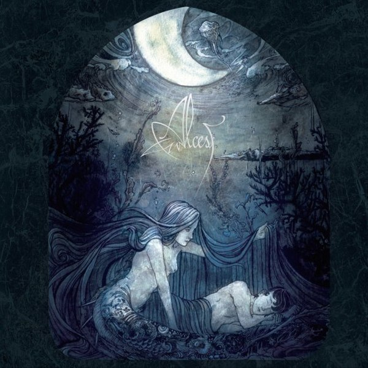

Alcest
Écailles de lune

black gaze, ethereal, atmospheric, male vocalist, melancholic, sentimental, passionate, melodic, lush, poetic, nature, soothing, longing, bittersweet, uplifting, surreal, sad, nocturnal, bright, hazy, harsh vocals, blast beats, peaceful